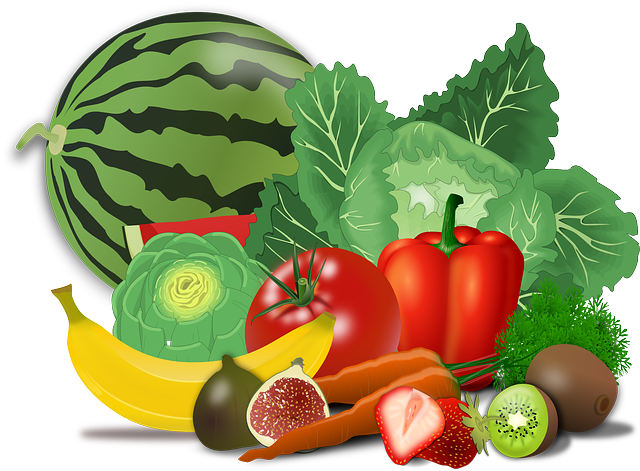
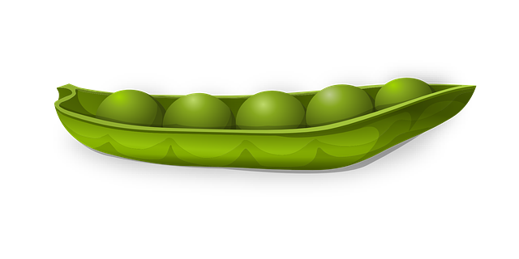

Правильное питание
Прием пищи жизненно необходим для каждого человека. Особенно, если это правильное питание, которое играет важную роль в формировании иммунитета человека и правильных пищевых привычек с раннего возраста. При получении полноценной еды организм растет, развивается и вырабатывает необходимую энергию, а также происходит обновление клеток и тканей. Наше самочувствие, настроение и внешний вид напрямую зависят от того, какую пищу мы употребляем.
Главные принципы правильного питания
Правильное питание требует определенной привычки и усилий на начальном этапе. Базируется ПП на трех принципах, которые обусловлены рациональностью этого типа питания:
- Разнообразный рацион
- Контроль калорийности и соблюдение баланса БЖУ
- Соблюдение выбранного режима питания каждый день
В начале перехода на ПП вам нужно вести дневник питания и пользоваться калькулятором калорийности. Со временем необходимость в этом отпадет и вы будете хорошо ориентироваться в продуктах, которые употребляете каждый день.
Что необходимо усвоить?
Правильное питание не означает жесткую диету или отказ от пищи. Но даже незначительное изменение привычного рациона выбивает организм из колеи. Как перейти на ПП, чтобы организм, привыкший к вкусной и не всегда полезной еде, не испытал стресс?
- Нужно решить для себя, что пора отказаться от старого и перейти на новый, здоровый уровень жизни. Самодисциплина является основой в саморазвитии
- Навести порядок на кухне. Чистая и уютная кухня дает чувство легкости и радости, а в таком состоянии не хочется закидывать в себя все подряд
- Физически нужно убрать из холодильника все вредные продукты: консервы, майонез, кетчупы, маргарин. Убрать из дома печенье, конфеты, чипсы
- Отказаться от фастфуда, полуфабрикатов, маринадов и солений. Даже натуральные домашние заготовки содержат уксус, соль и сахар в количествах, превышающих полезную норму для организма человека
Основные постулаты правильного питания
Правильное питание — это культура питания, которая способствует здоровому телу, духу, отличному самочувствию. В основе правильного питания находятся низкокалорийные продукты. Правильно сбалансированный рацион полностью направлен на получение организмом всех необходимых элементов, дарит энергию, хорошее самочувствие и бодрость духа.
Основные постулаты правильного питания совсем не сложно соблюдать, нужно только их запомнить:
- Прием пищи должен быть спокойным, не нужно спешить проглотить отведённую порцию как можно скорее: кушайте размеренно, тщательно пережёвывайте, не проглатывайте куски на лету
- Обязательно завтракайте и обедайте плотно, в качестве ужина желательно выбирать легкие продукты и кушать не позже девятнадцати часов
- Не пренебрегать водой. Не менее чем полтора литра воды ежедневно должно поступать в организм. Нюанс заключается в том, что пищу не рекомендуется запивать. Помните, что пить воду или чай можно не ранее, чем через сорок минут после приема пищи
- В основе рациона должны быть преимущественно фрукты и овощи. Это обусловливается тем, что в них высокое содержание клетчатки, что благоприятно воздействует на работу обменной системы
- Стоит исключать из рациона рафинированные продукты
- Также правильное питание — это отказ от алкоголя и других вредных привычек
- В еде нужно соблюдать меру, наедаться сверх силы не лучшая затея. После еды должно быть легкое чувство голода

Какие продукты есть можно при правильном питании?
- Овощи – есть их следует, как свежими, так и в виде салатиков. Проводить термическую обработку не рекомендуется, чтобы сохранить максимум пользы
- Фрукты – сливы, яблоки, персики, абрикосы хорошо влияют на работу ваших органов. В летний период пользуйтесь возможностью, кушайте побольше фруктов
- Ягоды – специалисты-диетологи советуют также есть в их сыром виде. Не возбраняется и употребление в соках, компотах, морсах
- Зелень – это уникальный продукт, забывать о котором не стоит. Она здорово укрепляет иммунитет, помогает бороться с онкологическими заболеваниями. В составе некоторых сортов содержатся натуральные антибиотики
- Рыба и морепродукты – чтобы насытить себя полезными микро- и макроэлементами, достаточно три раза в неделю употреблять «дары морей и океанов»
- Кисломолочная продукция – это уникальный источник кальция, пища, которая идеально подходит для ежедневного употребления и легких, но сытных перекусов (йогурты, молоко, сметана, кефир, творог)
- Мясо – отдавайте предпочтение нежирным сортам (индюшатина, курица, кролик, телятина). Мясная продукция содержит огромное количество белка, который является основой человеческого организма
- Бобы – это незаменимый источник белков и «полезных» углеводов
- Каши – употребляйте кашки из цельнозерновой крупы, например, гречневой, ячневой, пшеничной. Они идеальны для сытного, насыщенного завтрака, так как содержат «долгие» углеводы, обеспечивающие чувство сытости на многие часы
Продукты от которых стоит отказаться
- Алкоголь
- Кофе
- Выпечка
- Газированная вода
- Колбасы и копчености
- Сладости
- Чипсы и сухарики
- Фаст-фуд и пр.
Пример рациона питания
- На завтрак можно съедать что-то калорийное, ведь энергии, полученной с едой, должно хватить на первую половину дня. Оптимальным решением может стать овсяная каша, свежие фрукты
- Перекус. Тем, кто не посещает тренировки в спортивном зале, можно использовать в качестве перекуса бананы. Желающим избавиться от лишних килограммов, в качестве перекуса лучше использовать некрахмалистые фрукты, свежие овощи
- Обед должен включать белковую пищу. Это нежирная курятина, рыба, говядина с гарниром, в качестве которого могут использоваться овощи, каши
- На полдник можно использовать кефир или нежирный йогурт. Полезными будут сухофрукты, небольшое количество орехов
- Ужин должен быть легким. Небольшое количество мяса, свежеприготовленный овощной салат, богатый клетчаткой, будут способствовать нормализации обменных процессов, пищеварению
Хорошее дополнение к ПП: Рецепт Ягодного смузи
Это необычайно простой, но богатый по вкусу и числу витаминок напиток, актуальный во все времена. Для приготовления вам потребуются:
- Любимые ягоды – 1 стакан
- Нежирное молоко или йогурт – 1⁄2 стакана
- Кубики льда – по желанию
Процесс приготовления: все компоненты измельчаем в блендере, разливаем по стаканам и пьем с огромным удовольствием!
Итог
Подводя итог, написанному всему выше, могу сказать, что правильно питание - это не диеты и не особая строгость к своему организму. Это та норма, освоив которую, вы почувствуете себя лучше. А ваш организм скажет вам за это «спасибо»!
